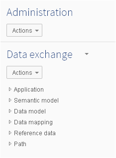

4. Configuring Data Exchange
Section contents
4.1. Global view

The Data Exchange repository for data mapping configurations is located in the 'Data exchange' data set under the EBX5 'Administration' tab. The 'Application' domain contains the portfolio of applications with the interface configuration. An interface is used to configure the source and the target applications involved in a data flow.
The 'Semantic model' domain contains the Object Class and Property items used to link the Tables and Fields to the semantic layer. The Semantic model is not mandatory to configure data mapping. However, it allows you to improve data lineage and integration with Information governance. The 'Data model domain' contains the configuration for Tables and Fields. The 'Data mapping' domain contains the actual data mapping configuration applied at the table level, and then the field level.
4.2. Application
The Application domain contains the declaration of every application that is involved in the data flow (import, export, transfer) managed by Data Exchange.
4.2.1. Application
An application is used as a source and/or target in the execution of a data flow process (import, export or data transfer).
Property | Definition |
|---|---|
Universal name | Any naming convention is valid. |
Logical name | The logical name is automatically provided by the add-on to ensure a unique identification. |
Code | Any naming convention is valid. |
Last modification date | Date of the last modification applied to the application. |
4.2.2 Application by type
An application can be associated with one or many of the following types: CSV, Excel, Default XML, XML and EBX5.
Property | Definition |
|---|---|
Application | The reference to an application. |
Application type | The type of the application. |
Application path | When this is an EBX5 type application, the path gives the data space and data set. |
4.2.3. Version
An application can be associated to a version. This version is used as documentation included in the exported data file when the targeted format can integrate it (this is the case in XML as appinfo tag). It has no impact on the data mapping configuration management.
Property | Definition |
|---|---|
Code | Any naming convention is valid. |
Version | Any naming convention is valid. |
Application by type | The reference to an application with its type. |
4.2.4. Interface
An interface allows data to flow between two applications.
Property | Definition |
|---|---|
Source application | Reference to the application with its type playing the role of the source. |
Target application | Reference to the application with its type playing the role of the target. |
Description | Description of the interface. |
4.2.5. Object class by Application
An application can hold one to many Object Class items. You can use the Object Class to create the relationship between a Table in the Data model and its related item in the Semantic model. Several tables can be linked to the same Object Class.
Property | Definition |
|---|---|
Application | Reference to an application. |
Object class | Reference to an Object Class. |
Description | Description of the relation between the application and the Object Class. |
4.3. Semantic model
The Semantic model provides a business data architecture based on Object Class and Property items. An Object Class can be linked to one or many tables. A Property can be linked to one or many fields.
4.3.1. Object class
An Object class is a business concept that can be linked to one or many tables declared in the data models.
Property | Definition |
|---|---|
Code | Any naming convention is valid. |
Name | Any naming convention is valid. |
Is removed | If set to True: The Object Class is no longer valid. It is logically removed. By using the purge service, the data will be physically deleted. If set to False: The Object Class is valid. |
Description | Description of the Object Class. |
4.3.2. Property by Object Class
A property is held by one or many Object Class items.
Property | Definition |
|---|---|
Object Class | Reference to an Object Class. |
Property | Reference to a Property held by the referenced Object Class. |
Description | Description of the association between the Object Class and the Property. |
4.3.3. Property
A Property is a business concept that can be linked to one to many fields declared in the data models.
Property | Definition |
|---|---|
Code | Any naming convention is valid. |
Name | Any naming convention is valid. |
Is removed | If set to True: The Property is no longer valid. It is logically removed. By using the purge service, the data will be physically deleted. If set to False: The Property is valid. |
Description | Description of the Property. |
4.4. Data model
The Data model provides a logical data architecture based on Table and Field items. The data mapping configuration is also based on these items.
4.4.1. Table
A table is a container of data that depends on the application type. For EBX5 type applications, it is directly a table in EBX5. For XML type applications, it is a node in the XML file.
Property | Definition |
|---|---|
Code | Any naming convention is valid. |
Application | Reference to the application that owns the table. |
Application type | Type of the application. |
Object Class | The table can be linked to an Object Class. This is the way to make an association between the logical data architecture and the business architecture. |
Name | Logical name of the table. |
Label | Label of the table. |
Path | The path of the table. |
Is removed | If set to True: The Table is no longer valid. It is logically removed. By using the purge service, data will be physically deleted If set to False: The Table is valid. |
Description | Description of the table. |
4.4.2. Field
A field is held by one Table only.
Property | Definition |
|---|---|
Code | Any naming convention is valid. |
Table | Reference to the table that owns the field. |
Property | The field can be linked to a Property. This is the way to make an association between the logical data architecture and the business architecture. |
Name | Logical name of the field. |
Label | Label of the field. |
Data type | Reference to a Data type for the field. |
Order | Order of the field in table. The first position is '0'. |
Path | The path of the field. |
Is removed | If set to True: The Field is no longer valid. It is logically removed. By using the purge service, data will be physically deleted. If set to False: the Field is valid. |
Description | Description of the field. |
4.5. Data mapping
This domain contains the data mapping configuration for tables and fields.
4.5.1. Table mapping
The data mapping configuration between the tables.
Property | Definition |
|---|---|
Source table | Reference to the table used as the source for the data flow. |
Target table | Reference to the table used as the target for the data flow. |
Source application | Used to sort the records based on the application name and type. This data is computed automatically from the source table value. |
4.5.2. Field mapping
The data mapping configuration between the fields.
Property | Definition |
|---|---|
Source field | Reference to the field used as the source for the data flow. |
Target field | Reference to the field used as the target for the data flow. |
Mapping type | The mapping can be performed in a 'direct' way (the target field is equal to the source field) or based on split, or aggregation policies. In the current version of the add-on, only the direct mapping type is available. |
Source application | Used to sort the records based on the application's name and type. This data is computed automatically from the source field value. |
4.5.3. Field mapping transformation
The data transformation applied during field data mapping.
Property | Definition |
|---|---|
Field mapping | Reference to a Field mapping declaration. |
Transformation function | Reference to the transformation function to be applied. |
Order | Execution order of the transformation function in case several functions must be applied. |
4.6. Reference data
4.6.1. Application type
The current version of the add-on manages the following types: XML, Default XML and EBX5.
Property | Definition |
|---|---|
Code | Code of the application type. |
Name | Name of the application type. |
4.6.2. Predefined Application type
The add-on provides these predefined Application types.
Application type | Description |
|---|---|
EBX5 | An EBX5 type application is referenced through a data set. Its tables and fields are described through an EBX5 path. |
Default XML | A 'Default XML' type application relies on default XML paths automatically created by Data Exchange when an export XML process executes. |
XML | An XML type application relies on user-defined XML path declarations. |
4.6.3. Data type
This table references all the possible data type of a field.
Property | Definition |
|---|---|
Code | Code of the data type. |
Name | Name of the data type. |
4.6.4. Mapping type
In the current version of the add-on, only the 'Direct' mapping type is available. In future versions, other types will be provided to manage aggregation and split of fields.
Property | Definition |
|---|---|
Code | Code of the mapping type. |
Name | Name of the mapping type. |
Description | Description of the mapping type. |
4.6.5. Predefined Mapping type
The add-on provides this predefined Mapping type.
Mapping type | Description |
|---|---|
Direct | The mapping between the source and target fields is executed in a direct way: the target value is equal to the source value. There is no aggregation and/or split of fields values. |
Special notation: | |
|---|---|
| Aggregation and split of fields values. |
4.6.6. Transformation function
During data mapping, the data value can be transformed before moving to the target application. In the current version of the add-on, the 'No import' (and 'No export', 'No transfer') transformation function is delivered.
Property | Definition |
|---|---|
Code | Code of the transformation function. |
Name | Name of the transformation function. |
Java class | Java class of the transformation function. |
Description | Description of the transformation function. |
4.6.7. Predefined Transformation function
The add-on provides these predefined Mapping types.
Transformation function | Description |
|---|---|
No export | The source field value is not exported. |
No import | The target field value is not imported. |
No transfer | The field value is not transferred. |
4.7. Path
The path domain contains the declaration of all paths used in the data mapping configurations.
4.7.1. Path
The Path table collects all the path declarations used in the data mapping configuration.
Property | Definition |
|---|---|
Application type | A reference to the application type (EBX5, Default XML, XML). |
Path type | Either Table, Field or Application. |
Path | The path value. |
Comment | Description of the path. |